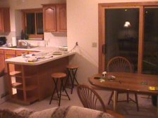
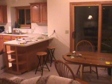
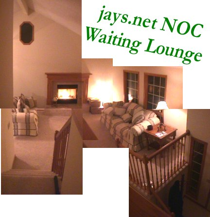
The fridge is pulled out 'cause I installed my own water line... Fear me.
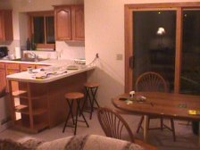
The master and guest "bedrooms" have been quickly converted into Apartment-esque
P.I.T., transmission monitoring station, and heart of the jays.net NOC.
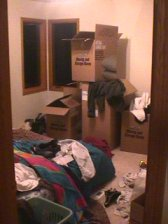
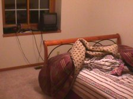
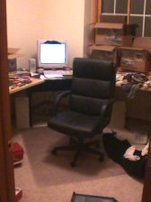
Nothing says "home" more than frilly shower curtains and the comforting
mess of your very own master bathroom.
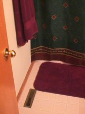
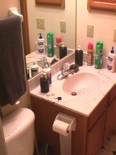
Those splicings are Jay's Solder-based Dial-tone Distribution System(tm).
All my cables are fully labelled (Thanks Josh!), but very little
method to the madness thus far.
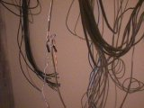
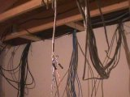
Look, ma! I (re)lit my own water heater pilot light! No wonder you thought
the thing was turned down too low...
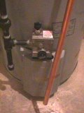
Our sincere thanks to Sherrie's Snappy Dryer Vent Install Company of Elkhorn,
Nebraska for their fine work! This is Jay's Net, reminding you to have
your Dachshunds spayed, neutered, and heavily sedated.
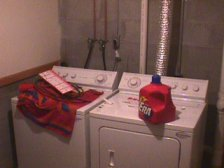
Dammit, Jay. Lift those weights and bike your butt back into shape!
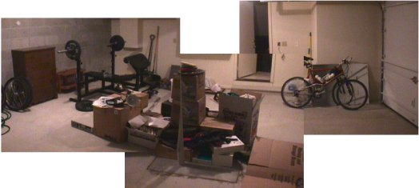